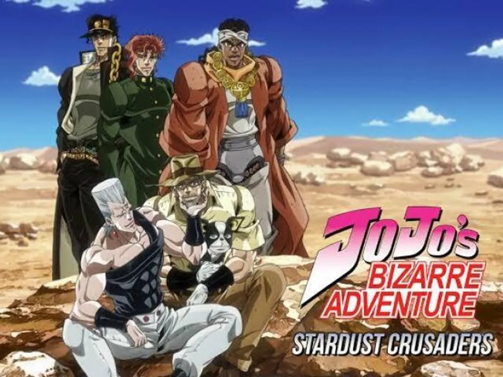
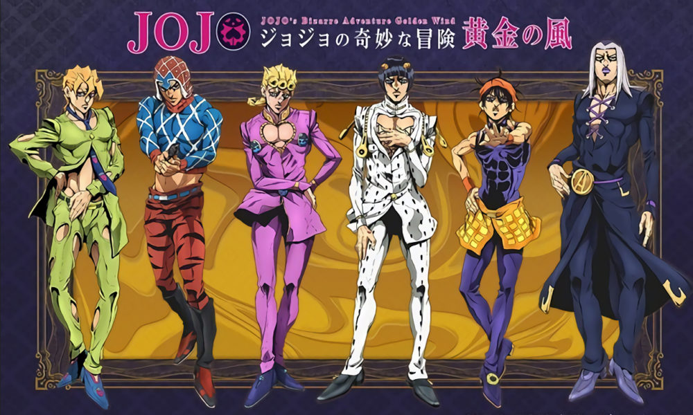
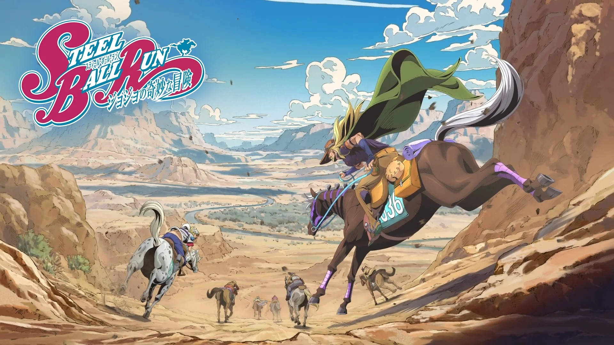

O que é JoJo?
JoJo's Bizarre Adventure é um mangá criado por Hirohiko Araki,
publicado pela primeira vez em 1987 na revista Weekly Shonen Jump.
A história é dividida em partes. Cada parte tem um protagonista diferente,
mas todos são da mesma família: os Joestar.
Por onde começar
- Parte 1 - Phantom Blood (é curta e explica a origem de tudo)
- Parte 2 - Battle Tendency
- Parte 3 - Stardust Crusaders (aqui aparecem os Stands)
Veja a lista completa na página de Partes.
Destaques do site


